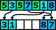
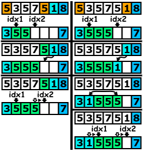

 W poprzedniej części w pierwszym przebiegu ustawialiśmy liczby mniejsze od "wartości osiowej", a w trzecim ustawialiśmy liczby większe od tej wartości. Zauważ, że te dwa przebiegi możemy wykonać w tym samym czasie. Liczy mniejsze od "wartości osiowej" powinniśmy umieszczać na początku tablicy wynikowej, a liczby większe na końcu tej tablicy. Poniższy rysunek obrazuje powyższą uwagę:
W poprzedniej wskazówce omówiliśmy problem liczb mniejszych i większych od „wartości osiowej”. Teraz pozostało nam zająć się liczbami równymi tej wartości. Liczby równe powinniśmy umieszczać tuż za liczbami mniejszymi od „wartości osiowej”.
Umieszczając kolejne elementy w tablicy wynikowej powinniśmy pamiętać, gdzie zaczyna i kończy się fragment tablicy zawierające liczby równe „wartości osiowej”. Nazwijmy ten fragment tablicy literą „B”. Ponadto znacznik początku nazwijmy „idx1”, natomiast znacznik końca nazwijmy „idx2”
 Kiedy będziemy chcieli umieścić kolejny element równy „wartości osiowej” powinniśmy umieścić go tuż za końcem fragmentu „B”. Następnie powinniśmy przesunąć znacznik „idx2”.
Rozważmy teraz umieszczenie elementu mniejszego od „wartości osiowej”. W tym wypadku też powinniśmy umieścić go tuż za końcem fragmentu „B”. Następnie powinniśmy zamienić ten element z początkowym elementem fragmentu „B”. Na końcu powinniśmy przesunąć znaczniki „idx1” i „idx2”.
| Dane: | Liczba naturalna n i ciąg liczb x0, x1,..., xn-1 |
| Wynik: |
Ciąg y0, y1,..., yn-1,
który jest podzielony na trzy części zgodnie z teścią zadania. Ponadto funkcja powinna zwrócić dwa indeksy idx1 oraz idx2 takie, że: yi < x0 dla każdego i < idx1 yi = x0 dla każdego i ≥ idx1 oraz i < idx2 yi ≥ x0 dla każdego i ≥ idx2 |
| Krok 1. | Przyjmij za y0 := x0 |
| Krok 2. | Przyjmij za idx1 := 0, przyjmij za idx2 := 1, przyjmij za idx3 := n |
| Krok 3. |
Dla i = 1, 2,..., n-1 wykonaj:
jeśli xi < x0 wykonaj:
przyjmij za yidx2 := xi,
zamień yidx1 z yidx2,
zwiększ idx1 oraz idx2
jeśli xi = x0 wykonaj:
przyjmij za yidx2 := xi
oraz zwiększ idx2
jeśli xi > x0 wykonaj:
zmniejsz idx3 oraz
przyjmij za yidx3 := xi.
|